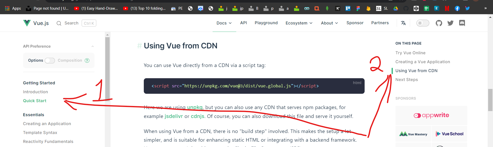
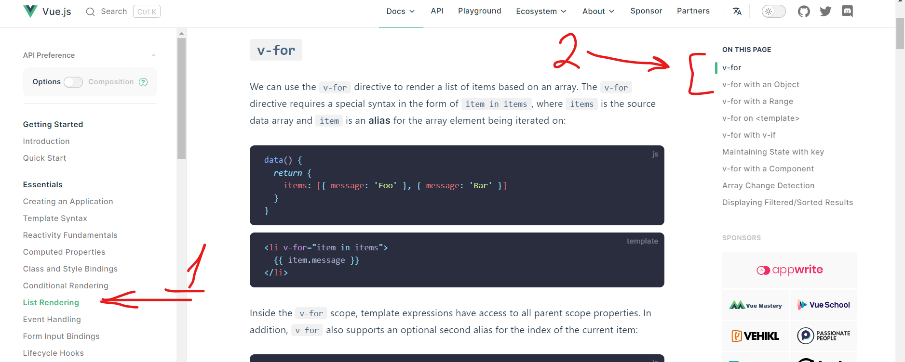

Сучасні методи розробки. Введення у vue.js
1. Ознайомтесь із щфіційною документацєю для викоритання vue.js офіційної документації vue.js .

3. Підключіть до вашої сторінки firebase та виведіть за допомогою vue.js інформацію про всіх юзерів із бази данних. Використайте для цього v-for із офіційної документації для vue.js

<script src="https://www.gstatic.com/firebasejs/6.0.0/firebase-app.js"></script>
<script src="https://www.gstatic.com/firebasejs/6.0.0/firebase-firestore.js"></script>
<script>
const firebaseConfig = {
apiKey: "...",
authDomain: "...",
projectId: "...",
storageBucket: "...",
messagingSenderId: "...",
appId: "...",
measurementId: "..."
};
firebase.initializeApp(firebaseConfig);
var db = firebase.firestore();
</script>